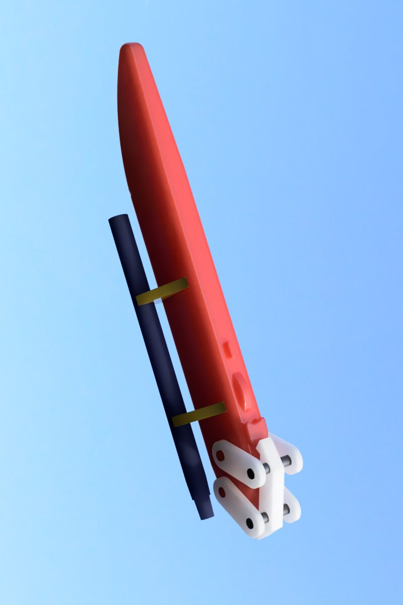
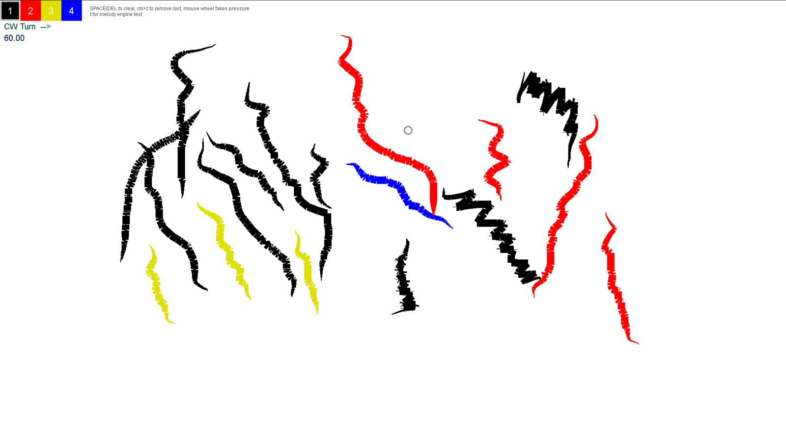
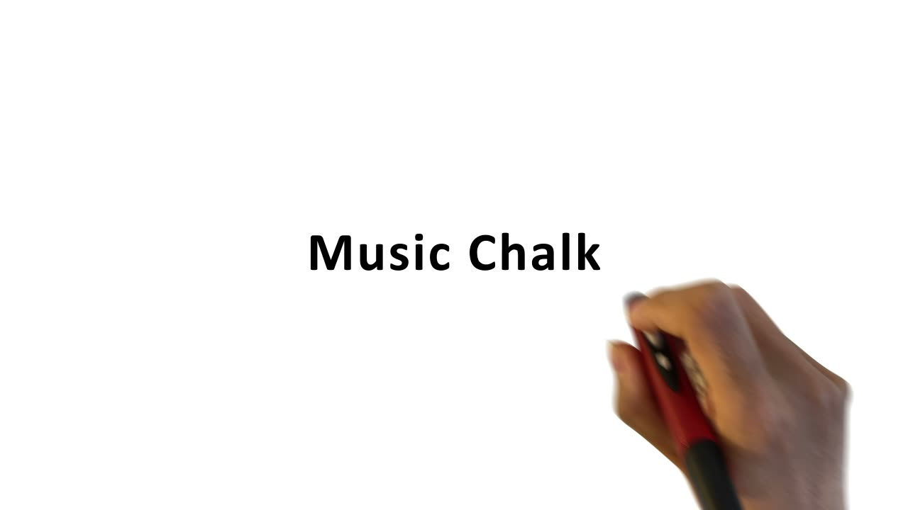

Musical Chalk - Work in progress showcase
Musical Chalk
Eli Blevis, Luddy School of Informatics, Computing, and Engineering, Indiana University , Bloomington, Indiana, United States
1. PubPub Link
https://nime.pubpub.org/pub/swg87k5w/draft?access=amsdwsim
2.Conference Abstraction
Musical Chalk is a design fiction that enrich chalk street-art performance with the spontaneous generation of music that fits the gestures of drawing. In this work-in-progress showcase, we present a web-based prototype that demonstrates the music generated in accordance with the gesture of drawing. Drawing with the base color “Chalk” will set a background and drawing with other color “Chalks” will build onto existing music. The current music fragments are generated in the Chinese pantatonic scale using a simple algorithm in order to produce coherent tones.
3.Requirements
The showcase can be viewed using any computer with a modern browser and tested with a mouse as a controller. The webapp is fully tested on Google Chrome and Mozilla Firefox. For a more authentic experience, the webapp is to be used with a pen mouse or a tablet with a stylus.
4.Program Description
In this work-in-progress showcase, we present a design fiction and a web-based prototype titled Musical Chalk. Chalk art is often done before an audience whether intentionally or not. It has been said that, “street art, like performance art, is a kind of process-based art” (Blanché [1]). The audience is interested in the process of making the art as well as the artifact. The audience marvel at how such a humble medium can become a work of art. Live music is also performance art, and is also process-based. Musical Chalk is designed to enrich chalk street-artists’ performance with the spontaneous generation of music that fits the gestures of drawing. The musical chalk will utilize optical location tracking or source-less motion tracking to detect the gestures of the street artists. Similar works attempt to link a musical performance to drawing including Sounding Brush (Sen et al.[2]), JamSketch (Kitahara et al.[3]) and NAKANISYNTH (Nakanishi et al.[4]). These projects put the focus on either a) the mapping from gestures to synthesizer control to have a nuanced manipulation on timbre or b) the generation of melody in accordance with the gesture. Our musical chalks will generate improvised music using variants of precomposed sequences. The music generated will enrich the experience of the audience as the watch the performative aspect of street art.
The web-based prototype uses the mouse to simulate the strokes of the chalk. To easily generate coherent tones, the current prototype plays melody and sequences composed using a Chinese pentatonic scale. Movements made with the black color “chalk” set a background melody. Drawing with the colored “chalks” produces different scales or single notes, depending on stroke length. The background melody changes in speed and mode in accordance with the foreground notes. Each color of “chalk” is mapped onto a different musical instrument. The prototype allows us to fine tune our music-making algorithm. The next steps are a) making the physical prototype for the chalks; b) utilizing Internet of Things technology to send data to a centralized system; c) making the generation of music more coherent and sophisticated; d) evaluating the physical prototype with street-artists and their audiences.
5. Media


The design fiction of the physical device that allows the tracking of drawing gesture


The interface of the web-based demo

▶Video of Musical Chalk
Live demo : https://zhangzit.pages.iu.edu/subsites/midiosc02/
6. ACKNOWLEDGEMENTS
First and foremost, I would like to express my deep and sincere gratitude to my research supervisor, Prof. Eli Blevis for invaluable expertise, guidence and feedback. I also want to express my thanks to Mr Samuel Philip Goree and Mr Stephen Moseson for the inspirations. I am extremely grateful for the feedbacks from Ms Zaiqiao Ye and Mr Lemus, Oscar A. Last but not least my sinsere thanks to my wife Melissa T Kronenberger for her patient editing and proofreading.
7. REFERENCES
Blanché, U. 2015. Street Art and related terms. SAUC - Street Art & Urban Creativity Scientific Journal. 1, 1 (Dec. 2015), 32 - 39. DOI:https://doi.org/10.25765/sauc.v1i1.14.
Sourya Sen, Koray Tahiroğlu, and Julia Lohmann. 2020. Sounding Brush: A Tablet based Musical Instrument for Drawing and Mark Making. Proceedings of the International Conference on New Interfaces for Musical Expression, Birmingham City University, pp. 331–336.
Tetsuro Kitahara, Sergio Giraldo, and Rafael Ramírez. 2017. JamSketch: A Drawing-based Real-time Evolutionary Improvisation Support System. Proceedings of the International Conference on New Interfaces for Musical Expression, Aalborg University Copenhagen, pp. 505–506. http://doi.org/10.5281/zenodo.1176344
Kyosuke Nakanishi, Paul Haimes, Tetsuaki Baba, and Kumiko Kushiyama. 2016. NAKANISYNTH: An Intuitive Freehand Drawing Waveform Synthesiser Application for iOS Devices. Proceedings of the International Conference on New Interfaces for Musical Expression, Queensland Conservatorium Griffith University, pp. 143–145. http://doi.org/10.5281/zenodo.1176086